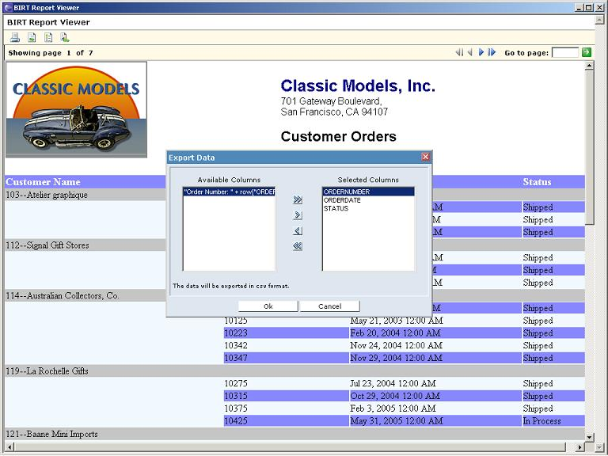
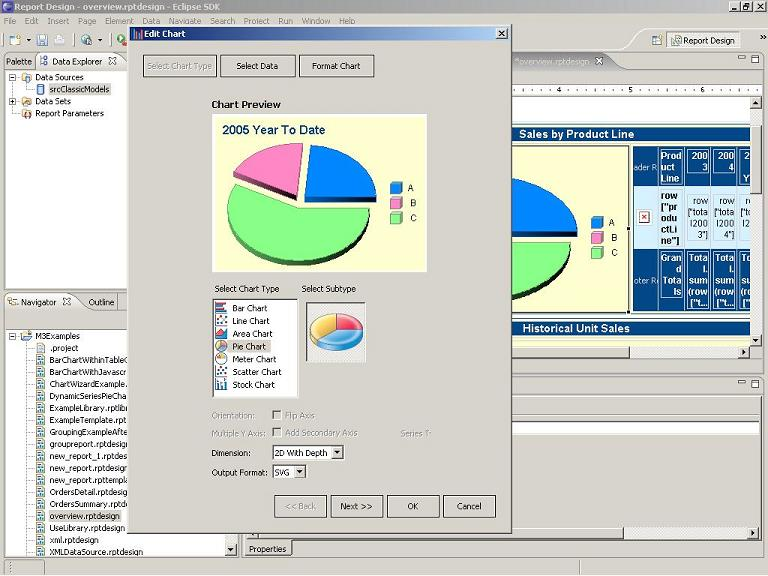
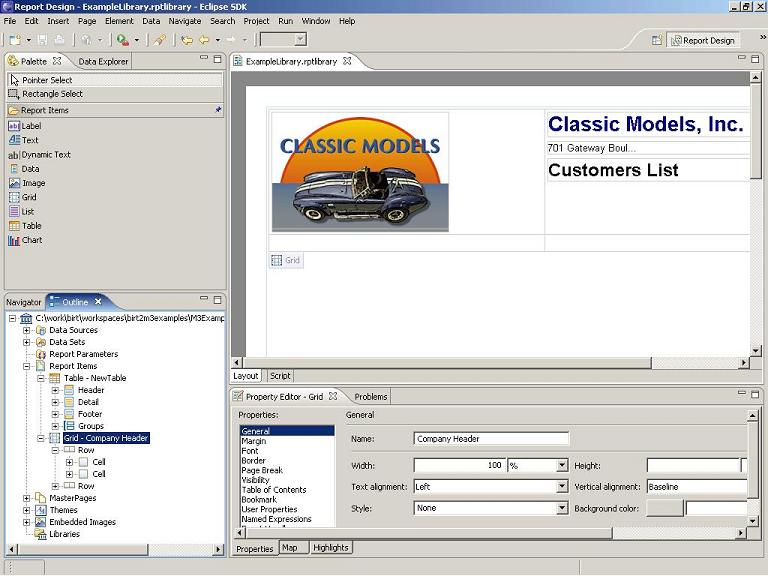
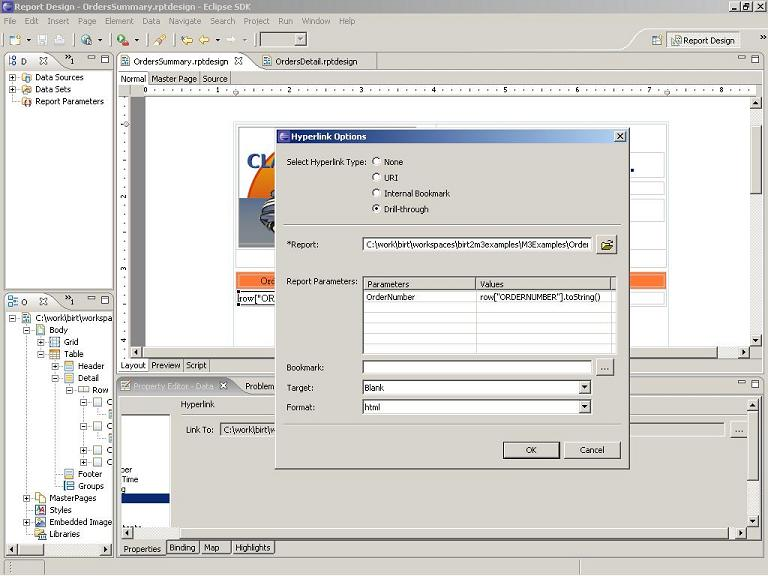
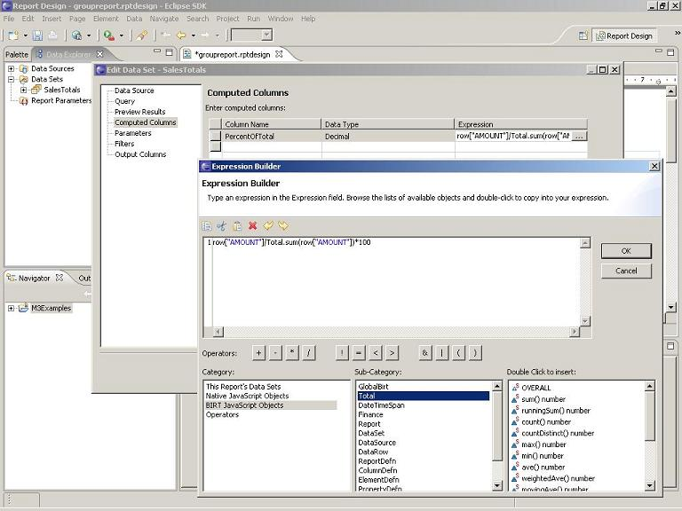
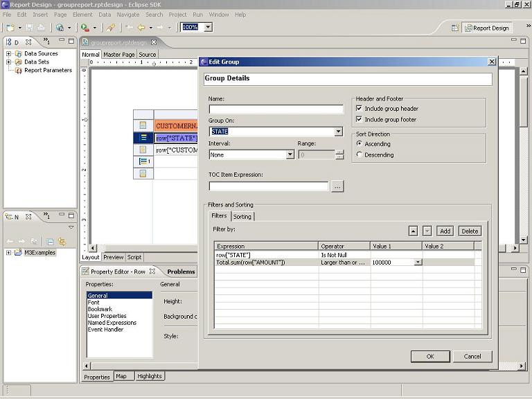
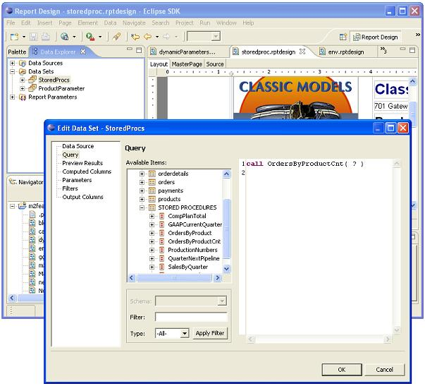

BIRT Project
New and Notable BIRT 2.0
The BIRT Team is pleased announce the release of BIRT 2.0.
BIRT now supports HTML pagination, CSV output, and a Table Of Contents with the supplied BIRT Viewer. In addition, features such as Libraries, Templates, Multi-Pass aggregates, flexible Charting Wizard and XML as a data source all contribute to making BIRT 2.0 a powerful platform for your reporting needs.
This release represents the culmination of a community-driven development cycle that has facilitated the development of quite a list of features and functions. Some of these features are highlighted below, but the complete list for 2.0 is available here
The BIRT Team would like to thank the BIRT community for the valuable feedback and support you have provided.
Traversing a large HTML report to locate a particular piece of information can be cumbersome. To allow better navigation of report data, BIRT 2.0 features a new and improved Viewer, based on AJAX technology. The new Viewer paginates the emitted HTML following report design properties, allowing it to display pages on demand via the page controls in the Viewer navigation bar.
In addition to pagination, the new Viewer supports Table Of Contents (TOC) functionality which allows someone viewing a report to jump to a particular section. For example, in the Customer Orders report presented below, the HTML spans seven pages. The TOC is displayed in a collapsible frame to the left of the report and represents a hierarchy of content for the entire report. Selecting any entry in the TOC automatically loads the desired page. TOC entries can be nested, as the Order Number is nested below the Customer Number in the example below.
The TOC is formatted with the standard BIRT Expression Builder.
The Viewer also supports data extraction to CSV format. This is accomplished by clicking the "Export Data" icon located on the toolbar.
A dialog is presented allowing the user to select the columns to export to CSV.
BIRT currently supports event scripting using JavaScript. Event handlers are coded in the BIRT Script Editor, which now supports syntax color-coding and code completion. The Editor also offers improved access to report item properties.
BIRT 2.0 has extended the script model to allow coding of event handlers in Java as well as JavaScript. This feature gives the Java developer greater flexibility when building complex reports. An additional benefit of coding in Java is the ability to debug the events using the new BIRT Report Launch Configuration under the Java Development Tools (JDT).
To create a Java event the developer first builds the event Class in Java.
Next the Class is assigned to the Event Handler Property for the given Report Item. In the case illustrated below, the Java Event Handler Class is assigned to a table row.
The Report can now be debugged within the JDT.
It is often desirable to use one set of credentials for developing a report and separate set(s) for production usage. BIRT 2.0 accomplishes this using a Data Source Property Binding Wizard, which allows several properties for the data source to be changed at runtime. For example, the report below uses the Username and Password parameters that are passed to it to connect to the data source.
The values used in the wizard can be more than simple parameters, including complex statements built using the Expression Builder. For example assume we wish to use a test database while in development and a production database when the report is complete. This can be accomplished by swapping the JDBC Driver URL at run time as shown below.
A new chart builder is available in BIRT 2.0. This wizard is designed to expedite chart development by separating the process into three easy to use dialogs: Select Chart Type, Select Data, and Format Chart. SVG rendering of charts has also been added.
Select Chart Type.

Format Chart.
Additional functionality has been added to the Chart wizard to enhance support for user interactivity. As shown below, additional events and actions have been added to support such things as scripting and drill-through.

BIRT now provides report developers the ability to build and publish report templates. Consistent look and feel can be difficult to achieve and maintain when building report applications. In addition, productivity and adoption by a broader range of report developers can be fostered by providing a pre-built report elements. Templates address these concerns and can range from skeletal outlines with predefined themes to complete reports.
Building a BIRT report template is very similar to building a standard BIRT report. One notable difference is that items within the report can be converted to template report items, which allow the template creator to set up indications where template user input is required.
Enter Prompts for Template Users.
A new Template Publishing wizard has also been added. The location of the template directory is configurable.
Publish Wizard.
The Template wizard allows the designer to populate a display name, description and image file. The template is now available to use.
Using a newly Created Template.
BIRT 2.0 introduces the concept of libraries to BIRT. With this feature, commonly used functions and report items can be encapsulated within a library. These libraries can then be imported into any number of reports for reuse. For example, a BIRT developer may wish to build a complex scripted data source and then encapsulate it within a BIRT library, freeing other members of the reporting team from implementing the same code.
Building a library.
A new project item type is now available for library creation. By dragging items from the palette to the Report Items node within the library Outline, the report developer can customize these components for reuse. Data Sources and Sets, Report Parameters, Report Items, Themes, Master Pages and Images can be added to the library.
After the library is created, it can be shared with report developers, who can import the library into their own designs.

Using a library.
The BIRT team has also added a new view to the BIRT perspective for browsing and importing the available libraries. Existing libraries within the workspace automatically show up in the Library Explorer. (In this screenshot, the Explorer has been pinned to the left side with the Palette and Data Explorer.)
Using a library is as easy as importing it and then dragging the desired items to required report location.
Reports that reference libraries automatically update when executed. This is very useful in cases where business or technical changes require report rework. For example, imagine that a database schema changes or the company logo is altered. If these details are encapsulated in libraries, only the library would need to change and all referencing reports would be automatically updated to reflect the changes.
Building on the existing drivers that BIRT already supplies, BIRT 2.0 delivers an XML ODA for retrieving XML data. The data can be streamed or reside within a file. This driver uses XPath syntax for XML to relational data mapping.

Use XPath expression to map an XML node to a row.

Use XPath syntax to map node and attribute values to columns.
BIRT 2.0 offers a new URL Builder to quickly support summary to detail Drill-through linking as well as standard Bookmark and URL creation.
Define the URL.

Drill-through Illustration.
Several improvements have been added to support advanced aggregate, filtering and sorting of report data. For example, computed columns can now use aggregate functions.
Computed column with aggregation.
In addition, the group dialog now supports adding multiple sorting and filtering expressions.
New Filtering and Sorting tabs.
BIRT 2.0 includes an enhanced data engine with the ability to process large data sets via a combination of memory and disk cache. The BIRT team has done tests that show that the engine can now handle reports of well over a million rows with linear response time and bounded memory usage. BIRT has also incorporated the iText PDF library to improve PDF generation fidelity.
Most applications, which require reporting, will have a need for culling or filtering the data that is used within the report. This allows tailoring the report to a specific user without the need to highly customize the report design. This is often done with report parameters that are used within the report logic and/or the SQL query. The issue, then, becomes how to present and collect the parameter information from the consumer of the report. BIRT 2.0 addresses this issue by adding sophisticated dynamic and cascading parameter support.
With the new Dynamic Parameter feature, the report designer can present the consumer a list of options for a parameter that is interactive and based on live content.
In the above example, a Dynamic Parameter is created that presents the report user with a list of Countries to choose from. This is achieved, by allowing the report designer the ability to create a BIRT data set, which can then be used to dynamically populate a parameter list box.
In addition to Dynamic Parameters, it is often desirable to present the user a set of interlinked parameter choices. For example, a user wishes to run a report that displays all of his/her employees that work in the Pasadena office. You would not want to display a list of all possible employee cities. Ideally a Country list would be displayed, and then possibly a State/Province, followed finally by a City list. BIRT 2.0 accomplishes this by delivering a Cascading Parameter Feature.
The Cascaded parameter list provides nested selection. In the above example, the Customer’s Country is selected and this choice restricts the Customer’s City choices. As with Dynamic Parameters, the choices are based on a BIRT Data Set.
The Expression Builder has been replaced with an improved GUI, which presents a more streamlined and intuitive interface for building JavaScript expressions. The new Expression builder includes features like line numbers, cut and paste functionality, object browsing and tool tips.
While Style Sheets offer a wide range of formatting and design features, with earlier versions of BIRT, styles had to be defined individually within the report design. To overcome this limitation, BIRT 2.0 delivers the capability to import Style Sheets into the report design, from an external source.
Using this feature, it is now easier to present a consistent look and feel across multiple report designs without having to create separate style instances for each. In addition, the feature makes it possible to easily coordinate report look and with web site look and feel, which can be particularly important when BIRT reports are included in extranets and web portals.
Expanding on the capabilities of the Report Designer, a new XML source editor tab is now available to the report designer. The Source tab presents the entire report design in color-coded XML format, allowing direct modifications the XML design that are persisted immediately.
Often the BIRT engine is embedded in or is part of an existing J2EE application. The ODA layer, which is responsible for data access, occasionally needs access to objects in the Context of the encapsulating application. This might include things like security credentials, connection handles, or parameter objects. To accommodate this requirement, BIRT 2.0 has added a Context Object within the ODA layer, which can be passed in from the external application. This object can take many forms and can be used for all of the items mentioned above.
BIRT now supports calling stored procedures. Within the Data Set Editor, the stored procedures are now displayed and can be used to build complex Data Sets.
In the above example, "OrdersByProducts" is being called to return a quantity of products sold, based on Product Name, which is passed as a parameter to the stored procedure.
The Data Set data types have been expanded to include Character Large Object (CLOB) and Binary Large Object (BLOB) items. In addition to adding support for these types within the ODA framework, these items can now be bound to certain controls within the designer. CLOB columns can be bound to Text controls and BLOB columns can be bound to Image controls.
In the example above, the logo image is stored as a BLOB type. The Image Builder has been enhanced to allow the BLOB image to be retrieved from the database and inserted into an Image control.